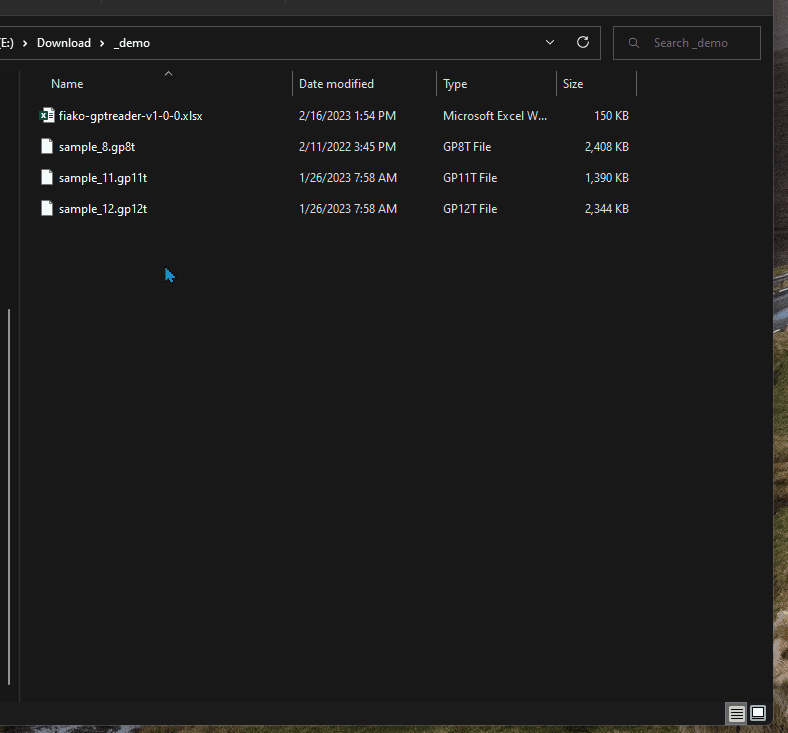
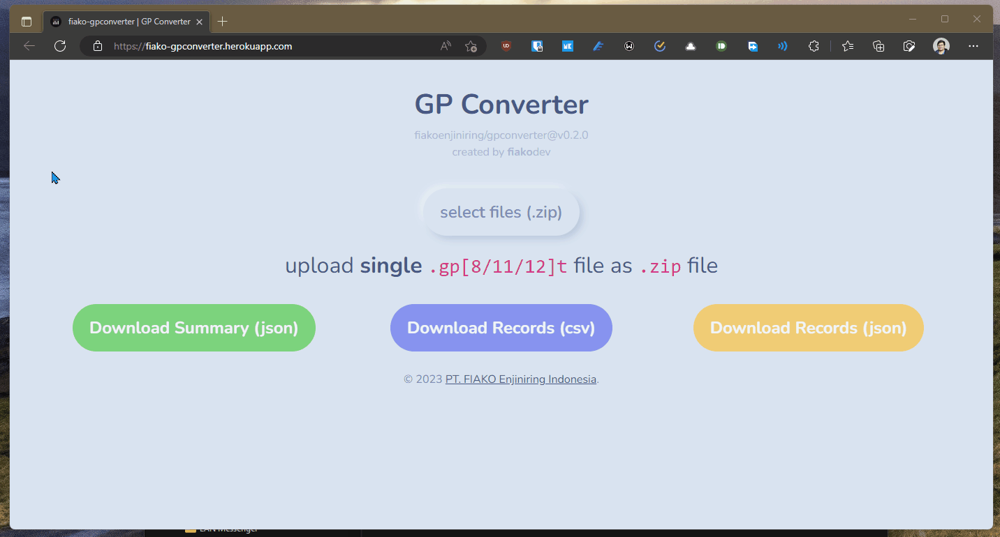

INFO
fiako-gpconverter merupakan aplikasi web yang mengubah summary aplikasi GROUP .gp*t menjadi data terstruktur berupa CSV atau JSON. Aplikasi dapat diakses di fiako-gpconverter.herokuapp.com.
Aplikasi ini diuji dengan versi .gp8t, .gp11t, dan .gp12t.
PERSIAPAN
Berikut yang harus dipersiapkan sebelum menggunakan aplikasi fiako-gpconverter:
- Setelah melakukan analisis/perhitungan menggunakan software GROUP, simpan hasil summary berbentuk
.gp*t. - Kompres SATU (1) berkas
.gp*tke dalam bentuk.zip. Kompresi dapat dilakukan dengan menggunakan kompresi dari Windows 11 (Klik kanan > Compress to ZIP File) atau aplikasi lainnya seperti 7-zip atau WinRAR. Perlu diingat, dalam satu.ziphanya terisi 1 berkas yaitu file.gp*t.

.gp*t ke dalam bentuk .zip di Windows 11.- Berkas
.zipsudah siap untuk dimasukkan ke aplikasifiako-gpconverter.
Dari langkah-langkah diatas dihasilkan berkas .zip yang dapat digunakan nantinya di aplikasi fiako-gpconverter.
PENGGUNAAN APLIKASI
Penggunaan aplikasi fiako-gpconverter cukup sederhana yaitu:
- Siapkan berkas
.zipyang telah disiapkan sebelumnya di bagian persiapan. - Buka aplikasi web
fiako-gpconverter. - Upload berkas
.zipyang telah disiapkan (dapat juga dengan cara drag berkas ke tulisan select file (.zip)). - Tunggu proses pengolahan. Jika telah diproses maka akan muncul informasi data summary.
- Download data terstruktur dengan mengklik “Download Records (csv)”. Tunggu prosesnya sampai berkas
.csvterunduh.
Langkah diatas dapat dilihat di Gambar 2.

fiako-gpconverter .- Setelah memperoleh Records berbentuk
.csv, data tersebut bisa disalin ke lembar kerjafiako-gptreader.xluntuk dieksplorasi lebih lanjut.
Terdapat dua opsi lainnya yaitu Download Summary (json) dan Download Records (json). Berkas JSON dapat digunakan untuk aplikasi web selanjutnya atau ditujukan untuk para developer. Saat ini, hanya Records berbentuk CSV saja yang sudah dapat digunakan untuk aplikasi/lembar kerja selanjutnya yaitu fiako-gptreader.xl, lembar kerja Excel untuk mengeksplorasi data summary GROUP.